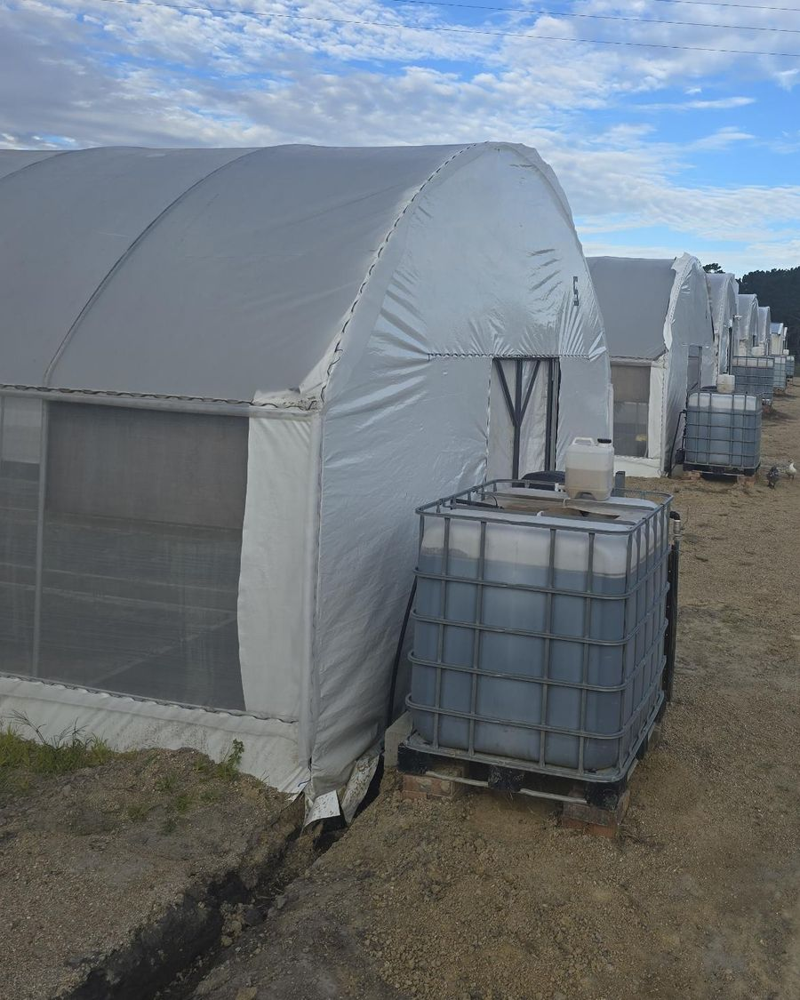

About
Grounded Cultivation
A hub for Australia's outdoor cultivation sector.

Grounded Cultivation is an independent editorial, directory and advocate for in-ground outdoor cultivation. We're here to tell the stories of the people, plants and places that make this sector what it is, and to celebrate the dedication and craft behind Australian-grown.
Understanding terroir
How do we define Australian-grown? The word terroir has been used for centuries in viticulture to describe the impact each microclimate, soil profile and cultivation approach has on the quality and flavour of the wine.
We're on a mission to define Australian outdoor cultivation through the lens of terroir. Through collaborative research, we aim to articulate what makes each outdoor farm unique, and how the plants they grow reflect the place they're grown in.
What we cover
Stories, resources, networks and research about people, plants and place. We don't cover products, brands or access to medicines, and we don't make medical or therapeutic claims about cannabis.